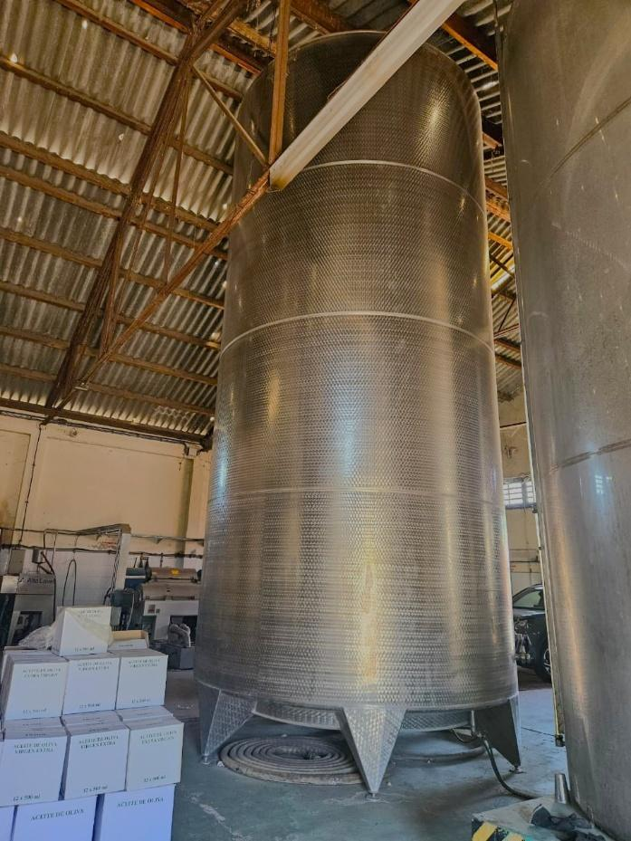

Aunque la vitivinicultura constituye la actividad agrícola más característica de Mendoza, el cultivo del olivo también posee una extensa trayectoria en la provincia. Su presencia se remonta al período colonial y, después de atravesar distintas etapas de expansión y retracción, la olivicultura se consolidó como una de las principales actividades agroindustriales mendocinas.
En Los Barriales, esta producción forma parte de un paisaje donde conviven viñedos, olivares y establecimientos dedicados a su procesamiento. El desarrollo industrial del distrito se fortaleció, además, con la creación en 2013 del Parque Industrial, Educativo y Tecnológico Los Barriales, sobre la Ruta Provincial 60.
Una de las empresas vinculadas con esta actividad es Olivícola Barros Hermanos, emprendimiento familiar con más de tres décadas de trayectoria. El establecimiento, inserto en un área con parcelas cultivadas con olivos y vides, en proximidad a barrios residenciales.
Su edificio se caracteriza por contar con una única nave de estructura de hormigón armado con ladrillo cocido. La cubierta posee estructura metálica con chapa de zinc. Al fondo del predio destaca la presencia de un tanque de agua elevado de estructura metálica.
La empresa cuenta con sus propios olivares y produce el aceite de oliva extra virgen “Doña Elvira”.La cosecha y molienda alcanzan su mayor intensidad durante el mes de mayo, cuando las instalaciones concentran buena parte de la actividad anual.
Con el paso de los años, se incorporó nueva maquinaria y tecnología que permitieron aumentar su producción. Según recuerda Rosa Barroso,, en 1995 disponían de un decanter que procesaba 1000 kg. de aceituna por hora. Hacia 2015 instalaron un equipo italiano que logra procesar 3000 kg por hora.
La empresa también cuenta con grandes tanques de acero inoxidable destinados al almacenamiento, con una capacidad total cercana a los 230.000 litros de aceite. En años anteriores parte de la producción se exportaba a Brasil, aunque las dificultades recientes del sector llevaron a modificar esa estrategia. Actualmente, además de procesar su propia producción, la olivícola presta servicios de elaboración a terceros.
Olivícola Barroso permite así incorporar otra mirada al paisaje productivo de Los Barriales: entre un territorio fuertemente identificado con el vino, los olivares y la producción de aceite muestran la diversidad de actividades agrícolas y agroindustriales que también contribuyeron a construir su identidad.
